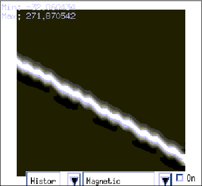
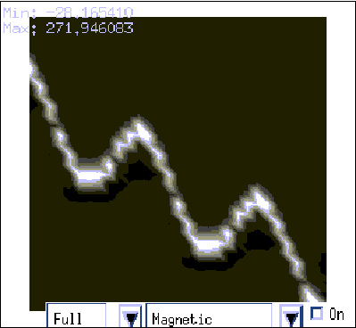
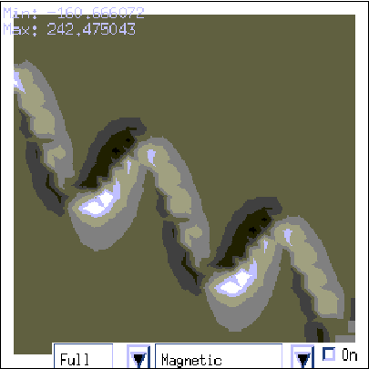
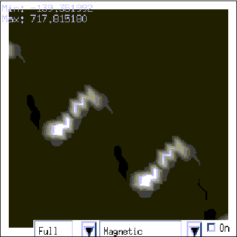

Tutorial 4: Remanent dykes
Exercise 4: Remanent Dykes
This exercise demonstrates the effects of remanent magnetisation when the remanence is defined in a pre-folding and post-folding environment.
1) Select New History from the File menu (and then select User Defaults), then set up a Base Stratigraphy with one layer with a susceptibility of 0.
2) Put in a dyke with the following parameters, and view the magnetic field in the preview:
- X 4000.00
- Y 3000.00
- Z 4000.00
- Dip Direction 210.00
- Dip 60.00
- Pitch 90.00
- Width 500.00
- Magnetic Sus 1.0 e-03

3) Next put in a default fold except for an Amplitude of 2000 m and re-calculate the magnetic field.

4) Now change the magnetic properties of the dyke by turning on remanence for the dyke (first click on Edit Properties in the Form parameters area) with the following values and re-calculate the magnetic field:
- Inclination 23.00
- Declination 135.00
- Strength 1.00e+02

5) Finally go to the Geophysics Survey Options window and click on Deformable Remanence (so that the remanent vectors will be folded) and re-calculate the magnetic field.

Noddy · open source under the MIT licence · Loop3D/noddy_qt